|
Bastugatan 38, Timmermansgatan 2 A och B Den imponerande skyhöga »Mälarborgen« uppfördes i tegel i1889. Byggherre och byggmästare var Sven Nilsson. Hans initialer återfinns högt uppe på fasaden mot vattnet. Där står ocksåbyggnadsåret. Arkitekt var Gustaf Hermansson som också ritat Oscars och Sofia kyrkor. Här bodde under en kort period 1892 målaren Eugene Jansson. | | 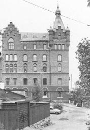 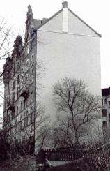
 Mälarborgen från Lilla Skinnarviksgränd västerut och på högra bilden från andra hållet österut. Mälarborgen från Lilla Skinnarviksgränd västerut och på högra bilden från andra hållet österut. |
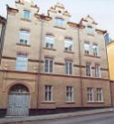
Bastugatan 40. Huset uppfördes1889 efter ritningar av Kasper Salin. | | 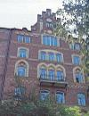
Bastugatan 40 mot Riddarfjärden, där målaren Eugène Jansson inspirerades i hög grad av de skönhetsupplevelser han upplevde från sin bostad fyra trappor upp i fastigheten. Han bodde här från 1889 till sin död 1915. | | Bastugatan 40 Eugène Jansson flyttade med sin mor och bror från faderns tjänstebostad i posthuset vid Lilla Nygatan till Timmermansgatan 2, år 1892. Efter ett kort mellanspel i en våning på Hornsgatan 71 flyttade han redan 1894 till Bastugatan 40. Här fick hanen suverän utsikt över Riddarfjärden och stadslandskapet med dess skiftande dagrar. Därmed inleddes ett viktigt skede iEugene Janssons måleri. Hans skapande vid denna tid blev en enda stor hyllning till Mariaberget och staden på andra sidanvattnet. |
Jansson skilde sig liksom Ture Rangström från de övriga vid Bastugatan. Han bar cylinder och den röda rosen i knapphåletväckte uppseende. I ateljévåningen var det mycket som han företog sig som föll utanför ramen för livet på berget, antingenhan spelade Chopin på pianot eller gjorde volter för att mjuka upp musklerna, hängande i ett par ringar i taket. Det var inte bara utsikten från berget som fångade Eugene Jansson. Om hans målning »Besvärsbacken« 1899 skriver Nils G.Wohlin: »Hur många av de trötta vandrare, som strävat uppför Besvärsbacken ha kunnat se någon skönhet i de enkla1800-talsfasader som vetta mot gatan med dess fattiga kullerstenar. Men konstnären med sin rikare syn har av detta alldagligamotiv lyckats framskapa något av sublim helg.« År 1899 målade han också »Trapporna vid Timmermansgatan«och »Mångård«, med Bastugatans husgavlar och mäktiga popplar. Eugene Jansson var romantiker och målande poet. Klas Fåhraeus har i en essä sagt att Jansson i gränderna på Söder fann all den poetiskanäring hans känsla behövde. I Riddarfjärdens vatten speglade han sina drömmar.Efter Eugènes död bodde brodern Adrian kvar i lägenheten. Av honom, som här levde ett underligt enstöringsliv med en svart katt somvän och sällskap, hyrde författaren Jan Fridegård ett rum. Han har skildrat lägenheten i romanen Här har du min hand, en friståendefortsättning av Lars Hård: Med häpnad såg jag viken långt under mig när jag kom till fönstret, och folket på kajen liknade myror. En hisskran rakt nedanförliknade förvillande en leksak. Sedan hela staden med gröna koppartak här och där, torn och lummiga fyrkanter som måste varaparkerna. Så utkanterna norrut med sina stora komplex och sedan blånande skogarna bortom varandra.Från mitt rum såg staden och sjön nästan alltid blå ut. [...] Särskilt en morgon strax före jul efter ett nattligt snöfall, var hela bilden underligt blå,samma färg som blåelsen mor blandade till hemma för att stärka gardinerna med. Bastugatan 44 Envåningshuset i sten vid gatan uppfördes 1867 för snickarmästare F Danielsson. Huset har slätputsad fasad och port i trä in till gården.Det tre våningar höga gårdshuset uppfördes 1862 för F Danielsson, som då var snickargesäll. Även detta hus är slätputsat.
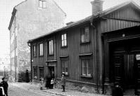
Bastugatan 44-48. 1912. Västerut. I bakgrunden Lundabron. Kattgränd till höger vid det höga huset. |
|
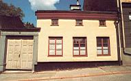
Bastugatan 44. Gårdshuset uppfördes 1862, gathuset 1867. |
|
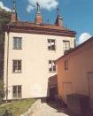
Bastugatan 44. Gårdshus. |
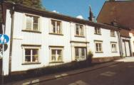
Bastugatan 46. Huset uppfördes troligen vid 1700-talets början. Sin nuvarande utformning fick byggnaden i samband med reparationer efter brand 1865.
|
|
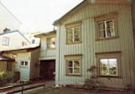
Bastugatan 46, gården. |
|
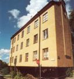
Bastugatan 48. Den östra halvan av huset uppfördes 1852 av murargesällen C J Sandgren. Bygget finansierades genom den några år tidigare instiftade fattigbyggnads-
fonden. I husets bottenvåning har murarna från ett äldre hus utnyttjats. 1882 tillbyggdes huset i vinkel västerut.
|
|
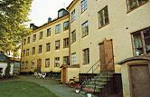
Bastugatan 48, gårdsfasad. |
| |
{kind=link}